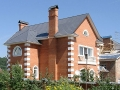
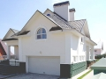
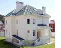
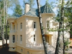

Проектирование
Строительство
Отделка и ремонт
Инженерные системы
|
Строительная компания "Маршал"
Строительная компания "Маршал" успешно зарекомендовала
себя на российском рынке строительства и ремонта с 1995 года
(лицензия ГС-1-99-02-27-0-7709589332-025523-1).
Компания «Маршал» специализируется на строительстве «под
чистовую отделку» и «под ключ» коттеджей в Подмосковье,
преимущественно по Рублево-Успенскому направлению в
охраняемых поселках.
Вы можете либо приобрести готовый коттедж «под чистовую
отделку» или с отделкой «под ключ», либо заказать строительство по
заранее выбранному проекту. В случае строительства на заказ вы
можете воспользоваться обширным банком готовых проектов
коттеджей и большим выбором земельных участков, находящихся в
собственности строительной компании «Маршал».
Наши преимущества:
- солидный возраст компании;
- высокое качество работ;
- интеллигентные, опытные прорабы с высшим образованием,
специализированные бригады (славяне);
- комплексные услуги (от проекта коттеджа до завоза мебели);
- дополнительные услуги: установка системы "Умный дом",
ландшафтное проектирование и озеление;
- поэтапаная оплата;
- индивидуальный подход к каждому клиенту.
|
Наши работы




|